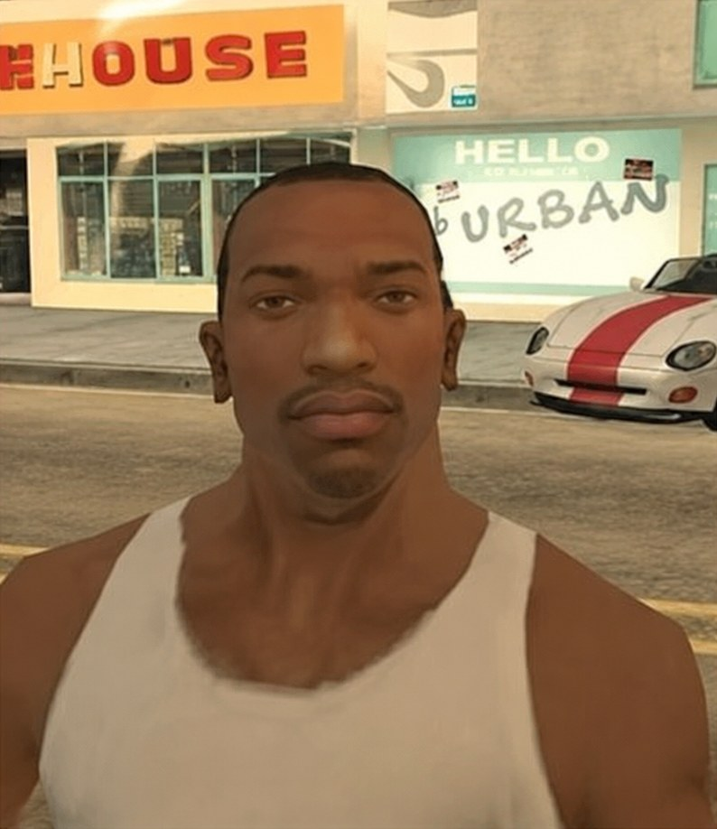
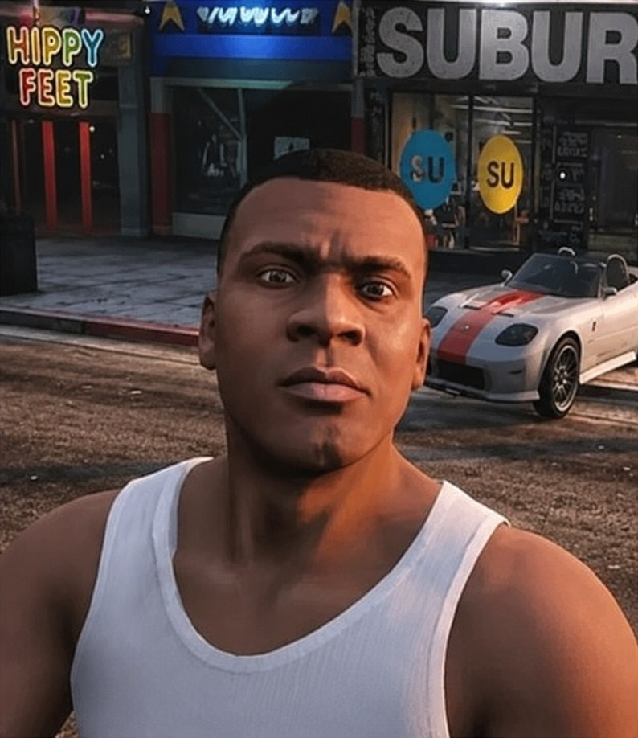

DO PIXEL AO POLÍGONO
Evolução Gráfica
A mesma cena, quase dez anos de distância: GTA: San Andreas (2004) e GTA V (2013). Passe o mouse (ou arraste o dedo) da esquerda para a direita: a imagem antiga se dissolve em desfoque e a nova vai ganhando nitidez.


GTA: San Andreas · 2004 GTA V · 2013